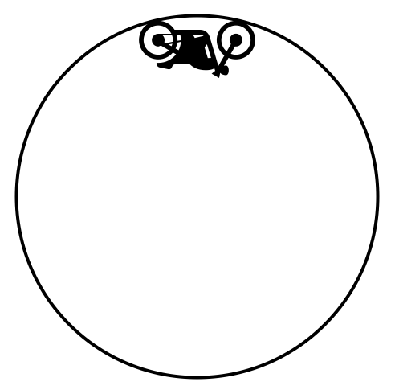
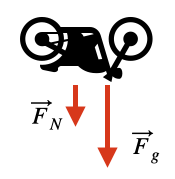

D3.2 Newton’s 2nd Law in Polar Coordinates#
D3.2.1 Motivation: Newton’s Second Law in Polar Coordinates#
So far, we have developed expressions for velocity and acceleration in polar coordinates:
These results revealed an important feature:
motion in polar coordinates naturally separates into radial and angular components
these components are coupled through geometry
Why change coordinates?#
In many physical systems, forces are not naturally expressed in Cartesian form.
Examples include:
gravitational attraction toward a central body
motion constrained to circles or orbits
forces that depend only on distance from a point
In these cases, using \((x,y)\) introduces unnecessary complexity.
A better approach#
Instead of forcing the problem into Cartesian coordinates, we can:
Express Newton’s second law directly in polar coordinates.
becomes
What this gives us#
This formulation allows us to:
separate the dynamics into radial and angular equations
match forces directly to the geometry of the problem
reveal important physical effects such as:
centripetal acceleration
conservation of angular momentum
behavior under central forces
Key Idea
We are not changing the physics—we are changing the language used to describe it.
Choosing coordinates that match the symmetry of a problem simplifies both the mathematics and the interpretation.
Big picture#
In Cartesian coordinates, Newton’s second law produces:
In polar coordinates, it becomes:
a radial equation (motion toward or away from the origin)
an angular equation (rotation about the origin)
This shift in perspective is the key to understanding systems such as:
planetary motion
circular motion
central force problems
Final insight#
Choose coordinates that match the physics, not the other way around.
D3.2.2 Newton’s 2nd Law in Polar Coordinates#
The process is similar in polar coordinates, but instead of \(xy\)-components we use \(r\theta\)-components:
Newton's 2nd Law — Component Form in Polar Coordinates
where we used the radial and transverse components of acceleration in polar coordinates.
Special Case: Uniform Circular Motion#
We will here assume uniform circular motion, that is, the object in interest moves in a circular path with constant speed. The consequences are:
The radius of the motion is constant: \(r = R\)
the radial speed and acceleration are zero: \(\dot{r} = \ddot{r} = 0\)
The angular acceleration is zero: \(\ddot{\theta} = 0 \)
Newton’s 2nd law then reduces to
Newton's 2nd Law — Uniform Circular Motion - Form 1
The only acceleration term that survived the assumptions is the centripetal acceleration.
Since \(\dot{\theta} = \omega\) and \(v_{\theta} = R\omega\) where \(v_{\theta}\) is the tangential speed, we can write it in a more useful form as
Newton's 2nd Law — Uniform Circular Motion - Form 2
Danger Zone — “Centripetal Force” Misconception
The phrase centripetal force is commonly used, but it can be misleading.
What is actually true?
There is no separate physical force called “centripetal force.”
Instead,
is the net radial force required to produce the centripetal acceleration
What provides this force?
The inward (radial) force can come from many different physical interactions, for example:
tension in a string
gravitational attraction
normal force from a surface
friction
👉 The term “centripetal force” simply refers to the sum of forces pointing toward the center.
Why this matters
If you treat “centripetal force” as a separate force, you may:
double-count forces
incorrectly add it to force diagrams
misunderstand the physics of the system
Correct way to think:
Centripetal acceleration comes from the net inward force, not from a new force.
Example — Uniform Circular Motion in Polar Coordinates
Problem
A particle moves in uniform circular motion with a speed of \(5.0~\text{m/s}\) and a radius of \(0.20~\text{m}\).
What is its net acceleration?
Solution
For uniform circular motion:
the radius is constant:
\[ r = R = \text{constant} \]the radial velocity is zero:
\[ \dot{r} = 0, \quad \ddot{r} = 0 \]the speed is purely tangential:
\[ v_\theta = r\dot{\theta} \]
Using the polar acceleration formula:
All terms vanish except the centripetal term:
Since
we can write
Substitute values:
Final Result
Interpretation
The acceleration is directed radially inward
Its magnitude depends on the square of the speed and inverse of the radius
This is the familiar centripetal acceleration, now expressed in polar coordinates
Example — Minimum Speed in Vertical Circular Motion (Globe of Death)
Problem
The Globe of Death is used in motorcycle stunt shows, where motorcycles ride inside a hollow sphere. The figure below shows a cross-section of such a sphere.
As a motorcycle performs vertical circular motion, what is the minimum speed required to maintain contact at the top of the sphere of radius \(2.5~\text{m}\)?
Ignore friction.

Solution
In general, this motion is not uniform, since the speed changes throughout the loop.
However, we can analyze the motion at the top of the circle, where:
there is no radial motion (\(\dot{r} = 0\))
only radial acceleration determines whether contact is maintained
Step 1 — Free-body diagram
At the top of the motion, the forces acting on the motorcycle are:
gravity: \(Mg\) (toward the center)
normal force: \(F_N\) (also toward the center if contact is maintained)

Step 2 — Apply Newton’s Second Law (radial direction)
We use polar coordinates centered at the sphere, with outward radial direction positive.
The radial equation is:
Both forces point toward the center (negative direction), so:
Step 3 — Determine minimum speed
The minimum speed occurs when the motorcycle is just about to lose contact:
Thus,
Canceling mass and solving:
Step 4 — Numerical result
Final Result
The motorcycle must travel at a speed greater than 5.0 m/s to maintain contact at the top.
Interpretation
At the minimum speed, gravity alone provides the required centripetal acceleration
At higher speeds, the normal force contributes additional inward force
If the speed is too low, the motorcycle will lose contact and fall